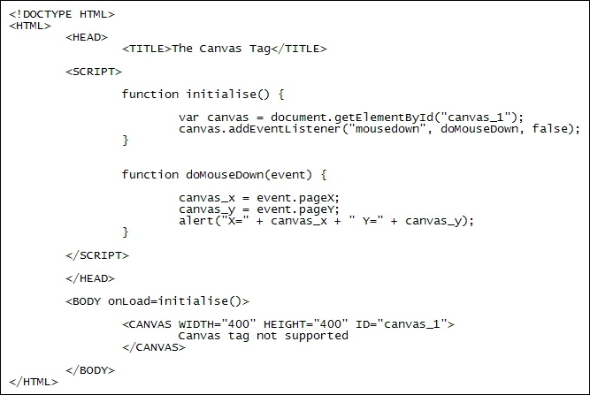

Mouse Events and the HTML5 Canvas
Ongoing HTML5 Canvas Tutorial: 1 2 3 4 5 6 7 8 9 10 11 12 13 14 15
You can also detect a mouse click on your canvas. Again, this is done with addEventListener. There are quite a few mouse events you can detect: mousedown, mouseup, mousemove, mouseout and mouseover. As an example, here's some code that detects the mousedown event:

The BODY tag calls an onLoad function. Inside of this function we have this:
var canvas = document.getElementById("canvas_1");
canvas.addEventListener("mousedown", doMouseDown, false);
So we get a reference to the canvas tag then add a mousedown event listener. This event calls a function with the name of doMouseDown. (Instead of detecting mousedown, you can replace it with other mouse events like mousemove and mouseup.)
The pageX and pageY properties are used to get the X and Y coordinates of the mouse when a user left clicks on the canvas. These coordinates are then displayed in an alert box.
In the next lesson, you'll learn how to detect touch events for platforms like the iPad, iPhone or other touch-enabled devices.